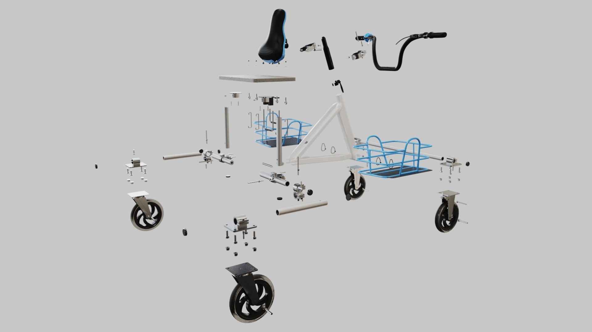
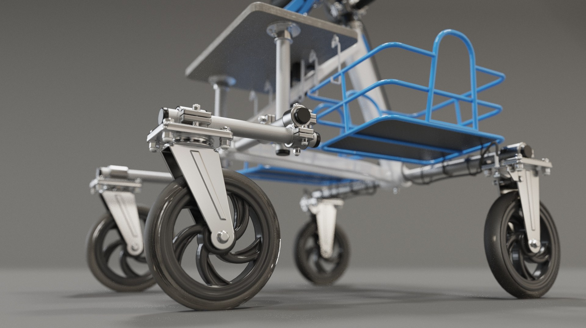

Every joint is bolted or clamped, so the walker can be assembled, adjusted and repaired with hand tools.

A steel tube runs through the bottom bracket.
Two nylon bushings fill the bracket shell; an M6 set screw stops the tube turning. Flange clamps at both ends carry the braked rear casters.
An M10 stud replaces the rear wheel axle.
Threaded plugs welded into two cross-tubes clamp the dropouts from outside. Cross clamps with M6 anti-rotation pins join the outriggers and the seat columns.
The bike's own levers and cables brake the rear casters.
Each cable is rerouted down the seat tube and along the rear cross-tube to a lever-arm brake on the caster fork.
